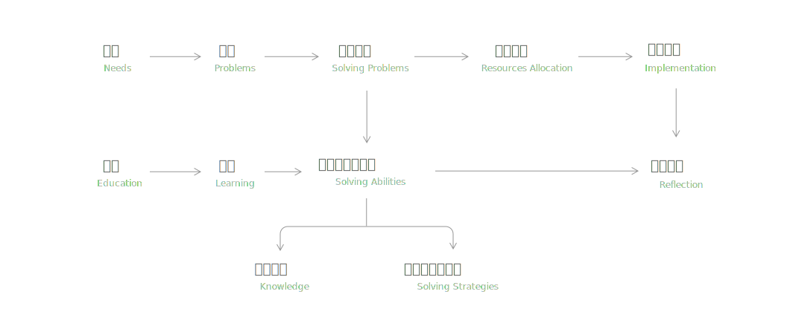

1.1 生活的本质在于满足自我的需求。
1.2 所谓需求，就是享乐的增强和痛苦的减少。
1.3 为了满足需求，我们必须解决问题。
1.4 为了解决问题，我们必须掌握知识。
1.5 为了掌握知识，我们必须学习和思考。
1.6 时间是有限的，做一件事的同时意味着放弃其他，所以，我们要合理的配置资源
1.7 个体能力是有限的，为了更高效，我们必须解决他人的问题，从而，作为交换，让他人帮我们解决问题。
1.8 解决了别人的问题，你就可以获得回报，表现形式可以是有形的金钱，也可能是无形的尊敬和生活品质的提高，以及自我成就感和价值感。
1.9 你没有解决别人的问题，反而增加了别人的痛苦，降低了别人的生活品质，那么你就要承担受到社会给你的直接或间接的惩罚。
1.10 从本质上来讲，人是一个主要由有机物组成的机器（有机图灵机）
1.11 外界信息通过感官刺激，信息输入到大脑（处理器），触发了本能的或者有意识的反应，为了得到需求的满足，也就是增强享乐以及减缓痛苦，大脑设定了目标，也就是提出了问题，进而利用已有的知识和模型，去解决问题，制定计划，采取行动，取得进展，和外界交互，得到外界的反馈，作为新的外界信息，重新作为输入进入大脑。其关系如下图所示：

1.10 生活中的行为大致可以分为四类：制定目标，解决问题，执行计划，反思学习
1.12 生活中常见的概念有：需求，问题，解决问题，资源配置，落实计划，反思纠正，解决问题的能力，学习，教育，知识储备以及解决问题的能力。其关系如下图所示：